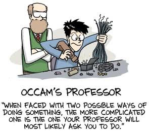

1. R and RStudio
Getting familiar with R and RStudio
![]()

“Strange events permit themselves the luxury of occurring.”
— Charlie Chan
“Without data you’re just another person with an opinion.”
— W. Edwards Deming
In this Lecture we will cover:
- an introduction to R programming language and software;
- an understanding the basic structure of an R script;
- the installation of R and RStudio;
- an overview of the RStudio interface;
- the basic operations in R (e.g. arithmetic, variables, data types, etc.); and
- an introduction to the R Console and R script editor.
1 R and RStudio
R is a programming language and software environment for statistical computing and graphics. It provides a wide variety of statistical (linear and non-linear modelling, classical statistical tests, time-series analysis, classification, clustering, multivariate analyses, neural networks, and so forth) and graphical techniques, and is highly extensible.
RStudio is an integrated development environment (IDE) for R. It provides a graphical user interface (GUI) for working with R, making it easier to use for those who are less familiar with command-line interfaces. Some of the features provided by RStudio include:
- a code editor with syntax highlighting and code completion;
- a console for running R code;
- a graphical interface for managing packages and libraries;
- an integrated tools for plotting and visualisation; and
- support for version control with Git and SVN.
R is the core software for statistical computing, like a car’s engine, while RStudio provides a more user-friendly interface for working with R, like the car’s body, the seats, steering wheel, and other bells and whistles.
2 Installing R and RStudio
R and RStudio are separate programs and need to be installed individually. Follow the instructions on the Posit website.
3 Setting up the workspace
3.1 General settings
Before we start using RStudio (which is a code editor and environment that runs R) let’s first set it up properly. Find the ‘Tools’ (‘Preferences’) menu item, navigate to ‘Global Options’ (‘Code Editing’) and select the tick boxes as shown in the figure below.

3.2 Customising appearance
RStudio is highly customisable. Under the Appearance tab under ‘Tools’/‘Global Options’ you can see all of the different themes that come with RStudio. We recommend choosing a theme with a black background (e.g. Chaos) as this will be easier on your eyes and your computer. It is also good to choose a theme with a sufficient amount of contrast between the different colours used to denote different types of objects/values in your code.

3.3 Configuring panes
You cannot rearrange panes (see below) in RStudio by dragging them, but you can alter their position via the Pane Layout tab in the ‘Tools’/‘Global Options’ (‘RStudio’/‘Preferences’ – for Mac). You may arrange the panes as you would prefer; however, we recommend that during the duration of this workshop you leave them in the default layout.

4 The R project
A very nifty way of managing your workflow in RStudio is through the built-in functionality of the R project. We do not need to install any packages or change any settings to use these. Creating a new project is a very simple task, as well. For this course we will be using the Intro_R_Workshop.Rproj file you downloaded with the course material so that we are all running identical projects. This will prevent a lot of issues by ensuring we are doing things by the same standard. Better yet, an R project integrates seamlessly into version control software (e.g. GitHub) and allows for instant world class collaboration on any research project. To initialise the ‘Intro_R_Workshop’ project on your machine please find where you saved Intro_R_Workshop.Rproj file in your file system (i.e. using Windows Explorer) and double click on it. We will cover the concepts and benefits of an R project more as we move through the course.
5 Installing packages
The most common functions used in R are contained within the base package; this makes R useful ‘out of the box.’ However, there is extensive additional functionality that is being expanded all the time through the use of packages. Packages are simply collections of code called functions that automate complex mathematical or statistical tasks. One of the most useful features of R is that users are continuously developing new packages and making them available for free. You can find a comprehensive list of available packages on the CRAN website. There are currently (2024-02-05) 20368 packages available for R!
If the thought of searching for and finding R packages is daunting, a good place to start is the R Task Views page. This page curates collections of packages for general tasks you might encounter, such as Experimental Design, Meta-Analysis, or Multivariate Analysis. Go and have a look for yourself, you might be surprised to find a good explanation of what you need.
Let’s install our first package. After clicking ‘Tools’/‘Install Packages’, type in the package name tidyverse in the ‘Packages’ text box (note that it is case sensitive) and select the ‘Install’ button. The Console will run the code needed to install the package, and then provide some commentary on the installation of the package and any of its dependencies (i.e., other R packages needed to run the required package).
The installation process makes sure that the functions within the packages contained within the tidyverse are now available on your computer, but to avoid potential conflicts in the names of functions, it will not load these automatically. To make R ‘know’ about these functions in a particular session, you need either to load the package via ticking the checkbox for that package in the Packages tab, or execute:
To prepare ourselves for the week ahead, let us also install the following packages. Here I demonstate the command line approach to achieve the same thing that can be done via the menu:
install.packages(rmarkdown)
install.packages(tidyverse)
install.packages(bindrcpp)
install.packages(ggpubr)
install.packages(magrittr)
install.packages(boot)
install.packages(ggsn)
install.packages(scales)
install.packages(maps)
install.packages(ggmap)
install.packages(lubridate)
install.packages(bindrcpp)Since we will develop the habit of doing all of our analyses from R scripts, it is best practice to simply list all of the libraries to be loaded right at the start of your script. Comments may be used to remind your future-self (to quote Hadley Wickham) what those packages are for.
Here you saw RStudio execute the R code needed to install (using install.packages()) and load (using library()) the package, so if you want to include these in one of your programs, just copy the text it executes. Note that you need only install the current version of a package once, but it needs to be loaded at the beginning of each R session.
- Why is it best practice to include packages you use in your R program explicitly?
6 The panes of RStudio
RStudio has four main panes, each occupying a quadrant of your screen: Source Editor, Console, Workspace Browser (and History), and Plots (and Files, Packages, Help). These can also be adjusted under the ‘Preferences’ menu. Note that there might be subtle differences between RStudio installations on different operating systems. We will discuss each of the panes in turn.
6.1 Source Editor
Generally we will want to write programs longer than a few lines. The Source Editor can help you open, edit and execute these programs. Let us open a simple program:
Use Windows Explorer (Finder on Mac) and navigate to the file
BONUS/the_new_age.R.Now make RStudio the default application to open
.Rfiles (right click on the file Name and set RStudio to open it as the default if it isn’t already)Now double click on the file – this will open it in RStudio in the Source Editor in the top left pane.
Note .R files are simply standard text files and can be created in any text editor and saved with a .R (or .r) extension, but the Source editor in RStudio has the advantage of providing syntax highlighting, code completion, and smart indentation. You can see the different colours for numbers and there is also highlighting to help you count brackets (click your cursor next to a bracket and push the right arrow and you will see its partner bracket highlighted). We can execute R code directly from the Source Editor. Try the following (on Macs replace Ctrl with Cmd):
- Execute a single line (Run icon or Ctrl+Enter). Note that the cursor can be anywhere on the line and one does not need to highlight anything — do this for the code on line 2
- Execute multiple lines (Highlight lines with the cursor, then Run icon or Ctrl+Enter) — do this for line 3 to 6
- Execute the whole script (Source icon or Ctrl+Shift+Enter)
Now, try changing the x and/or y axis labels on line 18 and re-run the script.
Now let us save the program in the Source Editor by clicking on the file symbol (note that the file symbol is greyed out when the file has not been changed since it was last saved).
At this point, it might be worth thinking a bit about what the program is doing. R requires one to think about what you are doing, not simply clicking buttons like in some other software systems which shall remain nameless for now. Scripts execute sequentially from top to bottom. Try and work out what each line of the program is doing and discuss it with your neighbour. Note, if you get stuck, try using R’s help system; accessing the help system is especially easy within RStudio — see if you can figure out how to use that too.
# symbol
The hash (#) tells R not to run any of the text on that line to the right of the symbol. This is the standard way of commenting R code; it is VERY good practice to comment in detail so that you can understand later what you have done.
6.2 Console
This is where you can type code that executes immediately. This is also known as the command line. Throughout the notes, we will represent code for you to execute in R as a different font.
Although it may appear that one could copy code from this PDF into the Console, you really shouldn’t. The first reason is that you might unwittingly copy invisible PDF formatting codes into R, which will make your script fail. But more importantly, typing code into the Console yourself gives you the practice you need, and allows you to make (and correct) your errors. This is an invaluable way of learning and taking shortcuts now will only hurt you in the long run.
Entering code in the command line is intuitive and easy. For example, we can use R as a calculator by typing into the Console (and pressing Enter after each line). Note that the output for every line of calculation (e.g. 6 * 3) is indicated by R>, as we see here:
Note that spaces are optional around simple calculations, but I encourage their use to adhere to the R style guidelines.
We can also use the assignment operator <- to assign any calculation to a variable so we can access it later (the = sign would work, too, but it’s bad practice to use it; we’ll talk about this as we go):
To type the assignment operator (<-) push the following two keys together: alt -. There are many keyboard shortcuts in R and we will introduce them as we go along.
Spaces are also optional around assignment operators. It is good practice to use single spaces in your R scripts, and the alt - shortcut will do this for you automagically. Spaces are not only there to make the code more readable to the human eye, but also to the machine. Try this:
Note that the first line of code assigns d a value of 2, whereas the second statement asks R whether this variable has a value less than 2. When asked, it responds with FALSE. If we hadn’t used spaces, how would R have known what we meant?
Another important question here is, is R case sensitive? Is A the same as a? Figure out a way to check for yourself.
- What are the values after each hashed statement in the following? Use the RStudio Console to determine these values:
- Use R to calculate some simple mathematical expressions entered. Assign the value of
40toxand assign the value of23toy. Makezthe value ofx - yDisplayzin the console.
We can create a vector in R by using the combine c() function:
A vector is a one-dimensional array (i.e., a list of numbers), and this is the simplest form of data used in R (you can think of a single value in R as just a very short vector). We’ll talk about more complex (and therefore more powerful) types of data structures as we go along.
If you want to display the value of apples type:
Finally, there are default functions in R for nearly all basic statistical analyses, including mean() and sd() (standard deviation):
It is best not to use c as the name of a value or array. Why? What other words might not be good to use?
Or try this:
- What did we do above? What can you conclude from those functions?
RStudio supports the automatic completion of code using the Tab key. For example, type the three letters app and then the Tab key. What happens?
The code completion feature also provides brief inline help for functions whenever possible. For example, type mean() and press the Tab key.
The RStudio Console automagically maintains a ‘history’ so that you can retrieve previous commands, a bit like your Internet browser or Google (see the code in: BONUS/mapping_yourself.Rmd). On a blank line in the Console, press the up arrow, and see what happens.
If you wish to review a list of your recent commands and then select a command from this list you can use Ctrl+Up to review the list (Cmd+Up on the Mac). If you prefer a ‘bird’s eye’ overview of the R command history, you may also use the RStudio History pane (see below).
The Console title bar has a few useful features:
It displays the current R working directory (more on this later)
It provides the ability to interrupt R during a long computation (a stop sign will appear whilst code is running)
It allows you to minimise and maximise the Console in relation to the Source pane using the buttons at the top-right or by double-clicking the title bar)
6.3 Environment and History panes
The Environment pane is very useful as it shows you what objects (i.e., dataframes, arrays, values and functions) you have in your environment (workspace). You can see the values for objects with a single value and for those that are longer R will tell you their class. When you have data in your environment that have two dimensions (rows and columns) you may click on them and they will appear in the Source Editor pane like a spreadsheet.
You can then go back to your program in the Source Editor by clicking its tab or closing the tab for the object you opened. Also in the Environment is the History tab, where you can see all of the code executed for the session. If you double-click a line or highlight a block of lines and then double-click those, you can send it to the Console (i.e., run them).
Typing the following into the Console will list everything you’ve loaded into the Environment:
What do we have loaded into our environment? Did all of these objects come from one script, or more than one? How can we tell where an object was generated?
6.4 Files, Plots, Packages, Help, and Viewer panes
The last pane has a number of different tabs. The Files tab has a navigable file manager, just like the file system on your operating system. The Plot tab is where graphics you create will appear. The Packages tab shows you the packages that are installed and those that can be installed (more on this just now). The Help tab allows you to search the R documentation for help and is where the help appears when you ask for it from the Console.
Methods of getting help from the Console include:
…or:
We will go into this in more detail in the next session.
To reproduced Figure Figure 1 in the Plot tab, simply copy and paste the following code into the Console:
library(tidyverse)
x <- seq(0, 2, by = 0.01)
y <- 2 * sin(2 * pi * (x - 1/4))
ggplot() +
geom_point(aes(x = x, y = y), shape = 21, col = "salmon", fill = "white")Submit a R script wherein you provide answers to the Task questions by no later than 8:00 tomorrow.
Provide a neat and thoroughly annotated and labelled Rmarkdown file which outlines the graphs and all calculations (as necessary).
Please label the Rmarkdown and resulting HTML files as follows:
-
BCB744_<first_name>_<last_name>_Task_A.R.
(the < and > must be omitted as they are used in the example as field indicators only).
Failing to follow these instructions carefully, precisely, and thoroughly will cause you to lose marks, which could cause a significant drop in your score as formatting counts for 15% of the final mark (out of 100%).
Submit your Tasks on iKamva when ready.
7 Session info
Reuse
Citation
@online{smit2021,
author = {Smit, AJ},
title = {1. {R} and {RStudio}},
date = {2021-01-01},
url = {https://tangledbank.netlify.app/BCB744/intro_r/01-RStudio.html},
langid = {en}
}